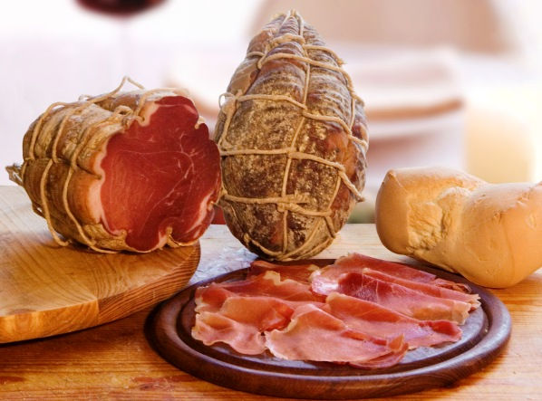

Ricette per dolci e dessert con il Cioccolato Perugina ... Raccolta di ricette facili per primi piatti, secondi, dolci e dessert su Mangiare Bene. Ricette regiornali o internazionali, ricette per bambini, e in più ogni settimana Marina propone un nuovo menù
Gambero Rosso - Ricette: primi, secondi, contorni e dolci ... Le ricette light sono un connubio di benessere e gusto, un insieme di piatti che riescono a coniugare l’attenzione per la salute con il piacere di sedersi a tavola, e che fanno bene al corpo e anche al palato!. In questa sezione troverete non solo tante ricette a base di verdure, ma anche gustosi primi piatti ultralight a base di pasta e cereali, succulenti secondi di carne e di pesce, senza ...
Allacciate il grembiule! Ricette. Lasciati ispirare dalle gustose ricette di cucina di Casa Buitoni. Potrai trovare idee per dar vita a tantissimi piatti originali e pieni di gusto: primi piatti, secondi, antipasti, torte salate, dolci e molte altre ricette per conquistare il palato della tua famiglia e dei tuoi amici!
Ricette di cucina - Cucchiaio d'Argento Scopri le ricette del Cucchiaio d'Argento: piatti intramontabili e gustose variazioni moderne da un classico della letteratura gastronomica italiana.
Ricette di Cucina - Ricette Mania Vuoi cucinare? Scopri consigli, ingredienti, tempi e modalità di preparazione delle nostre gustosissime ricette.
Le Ricette di Cucina di Mangiarebene | Mangiare Bene Primi piatti, secondi, dolci. Ricette veloci e facili. Dai piatti tradizionali alle proposte dei top chef. Tutte le ricette dei talent di Gambero Rosso Channel
Ricette di cucina Buitoni: Antipasti, Primi, Secondi ... Tutte le ricette di cucina a portata di mano: miglia di ricette facili e veloci, con spiegazioni passo passo. Antipasti, primi, secondi, contorni, dessert e molto altro.
Ricette GialloZafferano - Giallozafferano.it Tante idee e ricette per realizzare antipasti, primi piatti, secondi piatti e dolci eccezionali, scopri ingredienti, tempo di cottura e la preparazione!
Allacciate il grembiule!
2021.04.13 00:43

Crea sito LE MIE RICETTE ANTIPASTI PRIMI PIATTI Pasta Riso e Cereali Gnocchi Lasagne, cannelloni e altra pasta fresca Minestre, zuppe e Vellutate SECONDI PIATTI Carne Pollo Pesce Formaggi, Uova e verdure CONTORNI patate zucchine melanzane Altre verdure DOLCI Biscotti e Muffin creme e dolci al cucchiaio dolci vari TORTE Torte Soffici Ciambelloni Crostate Per le occasioni LIEVITATI LIEVITATI SALATI LIEVITATI DOLCI TORTE SALATE BEVANDE E LIQUORI RICETTE BASE base dolci base salate GUIDE UTILI RICETTARI SPECIALI TUTTI GLI SPECIALI MENU SETTIMANALI INGREDIENTI EPIFANIA SAN VALENTINO CARNEVALE PASQUA ESTATE HALLOWEEN NATALE MENU DI NATALE FACILE ANTIPASTI DI NATALE ANTIPASTI FREDDI NATALIZI PRIMI PIATTI DI NATALE SECONDI PIATTI DI NATALE CONTORNI DI NATALE DOLCI DI NATALE DA REGALARE DOLCI DI NATALE FACILI E VELOCI BISCOTTI DI NATALE CAPODANNO CENONE DI CAPODANNO ANTIPASTI DI CAPODANNO DOLCI DI CAPODANNO VELOCISSIMI TORTE DI NATALE o CAPODANNO SPECIALE DI PASQUA DOLCI DI PASQUA CHI SONO IN LIBRERIA IN TELEVISIONE NUOVO VOLTO DI GIALLOZAFFERANO INTERVISTE E …. VITA DA FOODBLOGGER CONTATTI MEDIA KIT STATISTICHE ALLACCIATE IL GREMBIULE LE RICETTE DEL GIORNO SUL TUO CELLULARE
ARTICOLI IMPERDIBILI
COME SCIOGLIERE I FORMAGGI
FORNO STATICO O VENTILATO
COME SOSTITUIRE IL LIEVITO PER DOLCI
COME SOSTITUIRE IL LIEVITO DI BIRRA
vedi tutti »
POLPETTE DI SPINACI
Polpette di spinaci un secondo piatto facilissimo da preparare, buonissimo che potete fare con gli spinaci freschi oppure con gli spinaci surgelati, si fanno in poco tempo e sono morbidissime ma soprattutto con queste polpette di spinaci sono riuscita a…
COSA CUCINARE DAL 12 AL 18 APRILE
COSA CUCINARE DAL 12 AL 18 APRILE 7 ricette per primi piatti, 7 ricette per…
PIZZA DI PASTA SFOGLIA
Pizza di pasta sfoglia una ricetta sfiziosa e facilissima ideale per la voglia di pizza…
BUDINO CON CIOCCOLATO AL LATTE
Budino con cioccolato al latte avanzato dalle uova di Pasqua ma ovviamente anche con il…
TORTA TENERINA CON CIOCCOLATO AL LATTE
Torta tenerina con cioccolato al latte delle uova di Pasqua una torta facilissima da preparare,…
SALAME DI COLOMBA
Salame di colomba e cioccolato un dolce facilissimo e veloce da preparare, senza cottura, ideale per riutilizzare la colomba avanzata e soprattutto perfetto per RICICLARE IL CIOCCOLATO DELLE UOVA DI PASQUA che, se come me avete dei bambini, in questo…
CIAMBELLONE CON CIOCCOLATO AL LATTE
Ciambellone con cioccolato al latte morbidissimo, facile da preparare, senza burro e perfetto anche per…
PASTA CON LE FAVE
Pasta con le fave un primo piatto primaverile delicato e buonissimo preparato ovviamente con le…
COSA CUCINARE DAL 5 ALL’11 APRILE
COSA CUCINARE DAL 5 ALL'11 APRILE 7 ricette per primi piatti, 7 ricette per secondi…
CREAM TART SALATA
Cream tart salata un antipasto sfiziosissimo e facile da preparare ma soprattutto davvero molto scenografico…
Navigazione articoli
1 2 … 324
Sui Social
Cerca una ricetta
Cerca la categoria
Instagram
Facebook
Allacciate il grembiule! Vuoi abilitare le notifiche?
Vuoi rimanere aggiornato sulle ricette?
Attendi…
No, grazie Si, attiva
Tema Seamless Altervista René , sviluppato da Altervista
Apri un sito e guadagna con Altervista - Disclaimer - Segnala abuso - Notifiche Push - Privacy Policy - Personalizza tracciamento pubblicitario
LE MIE RICETTE ANTIPASTI PRIMI PIATTI Pasta Riso e Cereali Gnocchi Lasagne, cannelloni e altra pasta fresca Minestre, zuppe e Vellutate SECONDI PIATTI Carne Pollo Pesce Formaggi, Uova e verdure CONTORNI patate zucchine melanzane Altre verdure DOLCI Biscotti e Muffin creme e dolci al cucchiaio dolci vari TORTE Torte Soffici Ciambelloni Crostate Per le occasioni LIEVITATI LIEVITATI SALATI LIEVITATI DOLCI TORTE SALATE BEVANDE E LIQUORI RICETTE BASE base dolci base salate GUIDE UTILI RICETTARI SPECIALI TUTTI GLI SPECIALI MENU SETTIMANALI INGREDIENTI EPIFANIA SAN VALENTINO CARNEVALE PASQUA ESTATE HALLOWEEN NATALE MENU DI NATALE FACILE ANTIPASTI DI NATALE ANTIPASTI FREDDI NATALIZI PRIMI PIATTI DI NATALE SECONDI PIATTI DI NATALE CONTORNI DI NATALE DOLCI DI NATALE DA REGALARE DOLCI DI NATALE FACILI E VELOCI BISCOTTI DI NATALE CAPODANNO CENONE DI CAPODANNO ANTIPASTI DI CAPODANNO DOLCI DI CAPODANNO VELOCISSIMI TORTE DI NATALE o CAPODANNO SPECIALE DI PASQUA DOLCI DI PASQUA CHI SONO IN LIBRERIA IN TELEVISIONE NUOVO VOLTO DI GIALLOZAFFERANO INTERVISTE E …. VITA DA FOODBLOGGER CONTATTI MEDIA KIT STATISTICHE ALLACCIATE IL GREMBIULE LE RICETTE DEL GIORNO SUL TUO CELLULARE